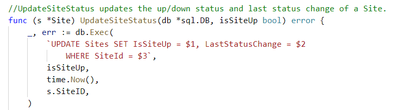
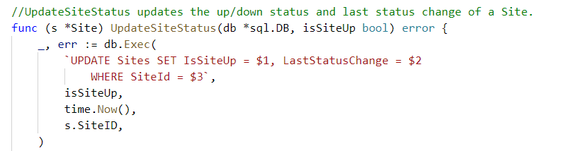

Go Code for SQL DAL Generation
James Culbertson, Houston Golang Meetup, October 18, 2018
xo - CLI to Generate Idiomatic
Go Code for SQL Databases
Houston Golang Meetup
October 18, 2018

SQL Database Access Options
- Manual Coding of Database Access
- Extender Libraries and Query Builders
- ORM Libraries
- DAL Generators
Manual Coding of Database Access
- Built on interfaces provided by the standard "database/sql" package along with the DB-specific client driver
Pros
- Efficient code at runtime
- High level of control and flexibility of the implementation
Cons
- Lots of manual boilerplate code to write
- Must manually write the SQL code
Manual Coding Example
Imports
 Query

Query

Extender and Query Builder Libraries
- Extend "database/sql" to provide higher-level abstractions and tools to make data access easier
- Build SQL queries from composable parts
Pros
- High level of control and flexibility of the implementation
- Easier Implementation
- Less Boilerplate
Cons
- Must manually write the SQL code
- Some performance penalty on packages that use reflection
ORM Libraries
- Provide a "code-first" approach to developing data access
- Some provide automatic migration
- Easier to use
Pros
- Easy to Use
- Less Code to Write
Cons
- Less Control of the Implementation
- Biggest performance penalty of the options